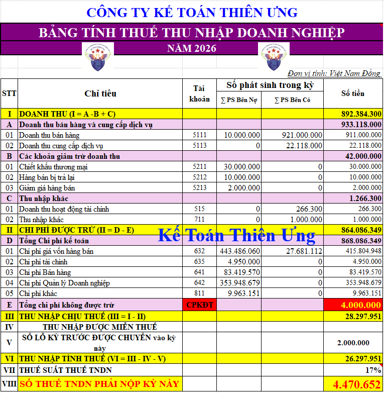

Mẫu bảng tính thuế thuế thu nhập doanh nghiệp mới nhất năm 2026 trên Excel

Để làm được bảng tính thuế TNDN này thì Công ty đào tạo kế toán Diệu Tâm mời các bạn tham khảo bài viết: Cách tính thuế TNDN
--------------------------------------------
Các bạn muốn tải (download) Mẫu bảng tính thuế TNDN 2026 trên Excel trên đây về để tham khảo và sử dụng thì có thể gửi mail về địa chỉ mail: ketoandieutam@gmail.com => Kế Toán Diệu Tâm sẽ gửi lại Mẫu bảng tính thuế TNDN 2026 trên Excel này cho các bạn
--------------------------------------------
Luật Thuế thu nhập doanh nghiệp số: 67/2025/QH15 có hiệu lực từ 01/10/2025 và áp dụng từ kỳ tính thuế thu nhập doanh nghiệp năm 2025 trở đi thì:
CĂN CỨ VÀ PHƯƠNG PHÁP TÍNH THUẾ
Điều 6. Căn cứ tính thuếCăn cứ tính thuế là thu nhập tính thuế và thuế suất.
Điều 7. Xác định thu nhập tính thuế
1. Thu nhập tính thuế trong kỳ tính thuế được xác định như sau:
| Thu nhập tính thuế | = | Thu nhập chịu thuế | - | ( | Thu nhập được miễn thuế | + | Các khoản lỗ được kết chuyển theo quy định | ) |
2. Thu nhập chịu thuế quy định tại khoản 1 Điều này được xác định như sau:
| Thu nhập chịu thuế | = | Doanh thu | - | Các khoản chi được trừ | + | Các khoản thu nhập khác (kể cả thu nhập nhận được ở ngoài Việt Nam) |
3. Doanh nghiệp có nhiều hoạt động sản xuất, kinh doanh trong kỳ tính thuế thì thu nhập chịu thuế từ hoạt động sản xuất, kinh doanh là tổng thu nhập của tất cả các hoạt động sản xuất, kinh doanh. Trường hợp có hoạt động sản xuất, kinh doanh bị lỗ thì được bù trừ số lỗ vào thu nhập chịu thuế của các hoạt động sản xuất, kinh doanh có thu nhập do doanh nghiệp tự lựa chọn (trừ thu nhập từ hoạt động chuyển nhượng bất động sản, chuyển nhượng dự án đầu tư, chuyển nhượng quyền tham gia dự án đầu tư không bù trừ với thu nhập của hoạt động sản xuất, kinh doanh đang được hưởng ưu đãi thuế). Phần thu nhập còn lại sau khi bù trừ áp dụng mức thuế suất thuế thu nhập doanh nghiệp của hoạt động sản xuất, kinh doanh còn thu nhập.
4. Thu nhập chịu thuế từ hoạt động chuyển nhượng dự án đầu tư thăm dò, khai thác, chế biến khoáng sản; chuyển nhượng quyền tham gia dự án đầu tư thăm dò, khai thác, chế biến khoáng sản; chuyển nhượng quyền thăm dò, khai thác, chế biến khoáng sản phải xác định riêng để kê khai nộp thuế, không được bù trừ lỗ, lãi với hoạt động sản xuất, kinh doanh trong kỳ tính thuế.